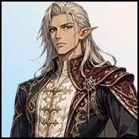

Player wiki noticeThis community-maintained page may contain gameplay, story, and mature-content spoilers.

Coradio— 完整字符指南
概览
Coradio 他现在的游戏包括普通对话、晚上在妓院训练室露面以及 主权边缘 作战课,他的时间表由 游戏日的奇数/偶数,而不是周日的名字。
快速信息
| 属性 | 数值 |
|---|---|
| 年龄/时代/调整 | 古/中世纪/中立 |
| 奇数日间地点 | 比赛场地,上午7时至6时 |
| 日间办公地点 | 战士协会,中午8点 |
| 奇日晚间地点 | Brothel训练室,下午6时至9时,如果可以进入 |
| 晚上地点 | Brothel训练室,上午8时至11时,如果可以进入 |
| 最喜欢的数据/特殊关系技能 | 无配置 |
| 战斗课 | 主权边缘; 仅比赛场地 |
查找 Coradio
打开 奇数游戏日和他见面 比赛地点:下午7时至6时打开 甚至游戏日和他见面 从中午到下午8时.这些普通地点不需要入门探求或开始产生感情。
如果你拥有妓院 并且已经建造了它 训练室他晚上也在场: 下午6点到9点, 晚上8点到11点房间入口需要现有的训练室建筑旗帜,他的存在本身不会建造或解锁房间。
他的Tournament/Guild日任务补充了Valkyra的:两个训练员是不可互换的.在寻找他的肖像或课程时使用Coradio自己的日程.
谈话和培训室场景
| 活动 | 所需资源 | 费用 | 奖励 | 可用性 |
|---|---|---|---|---|
| 与 Coradio 交谈 | 陌生人; Coradio 存在 | 15分钟 | 1个基本感情 | 所有三个地点每天5次 |
| Coradio培训室 | 培训室可进入;正确奇数/偶数晚窗;场景不完整 | 自动场景 | 5个基本感情 | 一次 |
谈话津贴是 地点间共享从锦标赛场地或联谊会搬到训练室并不能使五场会谈恢复活力,训练室的场景没有附加的感情前提或主权边缘的要求。
列出的亲情值是基础奖励. Coradio 自己没有最喜欢的Stat或特殊技能奖金,尽管简单模式调整和共享关系计算,设备,buffs和对齐可以影响最终收益.
学习主权边缘
- 使用 已支付版本 并且已经 电源/支持器接入.
- 见Coradio 7:00-6:00 单日比赛场地课程不在他的战斗机协会或训练室菜单里
- 带上 5 个晶体, 120个能源 和 45号镇静,并允许 300分钟 为行动。
- 选择 主权边缘。动作会消耗列出的资源并开始他的训练场景。
- 完成现场学习 主权边缘 并收到 30个基础Coradio 感情。然后该教训隐藏起来,因为技能已经学到了。
有关行动可向下列机构索取: 陌生人 并且已经 未配置钱费或额外统计门槛值. 技能目录的"能力协会"与这个故事驱动的课的要求是分开的,更高的爱并不能取代版本/访问门或Crystals.
菜单数据列出20点值,但实际训练使用故事触发路径:其场景完成授权 30个基本感情,路由器不授予单独的20点关系动作奖励.
主权边缘做什么
主权边缘升级普通 攻击 动作而不是添加单独的拼写或 H2H :
- 普通攻击破坏得到一个 增加15%在后来的敌人防御和战斗路径调整之前
- 它有一个 20%的精度 绕过敌人的守卫,再增加一个 50%的破坏奖金敌方损害的减少和地面防御仍然适用,除非另外一种效果分别绕过它们.
- 一个单独的 5% 迫击炮 乘以攻击造成的破坏 十个.
- 对符合条件的普通敌人,a 15%的斩首检查 在正常攻击检查前可以击败目标. Boss战斗,敌人标记为boss/unfelable/no-instant kill,而Grim Reaper则被排除在这种即时杀伤效果之外.
- 与 解除武装技术{\fn黑体\fs22\bord1\shad0\3aHBE\4aH00\fscx67\fscy66\2cHFFFFFF\3cH808080}"主权边缘"也具备这种能力 10%的解除武装机会将敌人接下来的破坏行动减半
这些是单独的战斗卷,不能保证每次攻击都进行特别打击,学习技能并不能使老板有资格斩首.
实际进展
在他的日间时间里见Coradio,如果您想获得友谊进步,请使用Talk,并在一个奇特的锦标赛当天学习主权边缘,当您的访问和资源允许的时候。在通过现有的路线建造妓院训练室之后,在他的晚间窗口里参观他的一次性场景和更多的谈话。
在 Coradio 的数据中没有当前的礼物动作,个人H2H,浪漫日期,公寓访问或工人招聘。他的对话可以暗示进一步的结晶训练,但他的当前动作列表中没有额外的结晶课。
如果进程 Stalls 显示
- 检查 游戏日的奇数/偶数而不是工作日 工作日 时间
- 那个 中午开始轮班 在奇数天他的日间地点是比赛场地
- 对于主权边缘,请使用 单日比赛场次检查 付费版本和支持者访问,并带来 5个水晶,120个能量和45个平静.
- 完成后缺失的课意味着技能已经获得。尽管动作的日常限制元数据, 课是一次性的 。
- 晚上的肖像画, 建造和进入 训练室,然后使用适当的 下午6时至9时/8时至11时 图标。
- Talk的五种日常用途在每个地点共享,自动训练室的场景是分开的,只完成一次.
相关页面
Coradio — Complete Character Guide
Overview
Coradio is an ancient elf sword trainer in Medieval Kings Demesne. His current gameplay includes ordinary conversation, an evening appearance in the brothel Training Room and the Sovereign Edge combat lesson. His schedule alternates by the odd/even number of the game day, rather than weekday names.
Quick Info
| Attribute | Value |
|---|---|
| Age / era / alignment | Ancient / Medieval / Neutral |
| Odd-day daytime location | Tournament Grounds, 7 AM–6 PM |
| Even-day daytime location | Fighters Guild, noon–8 PM |
| Odd-day evening location | Brothel Training Room, 6–9 PM, if accessible |
| Even-day evening location | Brothel Training Room, 8–11 PM, if accessible |
| Favorite stats / special relationship skill | None configured |
| Combat lesson | Sovereign Edge; Tournament Grounds only |
Finding Coradio
On odd game days, meet him at the Tournament Grounds from 7 AM–6 PM. On even game days, meet him at the Fighters Guild from noon–8 PM. These ordinary locations do not require an introduction quest or starting affection.
If you own the brothel and have built its Training Room, he is also available there in the evening: 6–9 PM on odd days, 8–11 PM on even days. The room entrance requires the existing training-room construction flag. His presence does not construct or unlock the room by itself.
His Tournament/Guild day assignment complements Valkyra's: the two trainers are not interchangeable. Use Coradio's own schedule when looking for his portrait or lesson.
Conversation and the Training Room Scene
| Activity | Requirements | Cost | Reward | Availability |
|---|---|---|---|---|
| Talk to Coradio | Stranger; Coradio present | 15 minutes | 1 base affection | Five per day across all three locations |
| Coradio at the Training Room | Training Room accessible; correct odd/even evening window; scene incomplete | Automatic scene | 5 base affection | Once |
The Talk allowance is shared between locations. Moving from the Tournament Grounds or Guild to the Training Room does not refresh the five talks. The Training Room scene has no extra affection prerequisite or Sovereign Edge requirement.
Listed affection values are base rewards. Coradio has no favorite-stat or special-skill bonus of his own, though easy-mode adjustment and the shared relationship calculation, equipment, buffs and alignment can affect the final gain.
Learning Sovereign Edge
- Use the paid version and have Higher Power/supporter access.
- Meet Coradio at the Tournament Grounds on an odd day, 7 AM–6 PM. The lesson is not in his Fighters Guild or Training Room menu.
- Bring five Crystals, 120 energy and 45 calm, and allow 300 minutes for the action.
- Choose Sovereign Edge. The action consumes the listed resources and starts his training scene.
- Finish the scene to learn Sovereign Edge and receive 30 base Coradio affection. The lesson then hides because the skill is already learned.
The action is available from Stranger and has no money fee or additional stat threshold configured. The skill catalogue's Ability association is separate from this story-driven lesson's requirements. Higher affection does not replace the version/access gates or Crystals.
The menu data lists a 20-point value, but the actual training uses the story-trigger route: its scene completion grants 30 base affection. The router does not award a separate 20-point relationship action reward.
What Sovereign Edge Does
Sovereign Edge upgrades the ordinary Attack action rather than adding a separate spell or H2H:
- Ordinary attack damage gets a 15% increase, before the later enemy defenses and combat-path adjustments.
- It has a 20% precision roll that bypasses enemy guard and adds a further 50% damage bonus. Enemy damage reduction and floor defense still apply unless another effect separately bypasses them.
- A separate 5% Mortal Blow roll multiplies the attack's damage by ten.
- Against eligible ordinary enemies, a 15% decapitation check can defeat the target before the normal attack checks. Boss fights, enemies marked boss/unfleeable/no-instant-kill, and the Grim Reaper are excluded from this instant-kill effect.
- With Disarming Technique, Sovereign Edge also qualifies for that skill's 10% disarm chance, reducing the enemy's next damaging action by half.
These are separate combat rolls, not a guarantee of a special strike on every attack. Learning the skill does not make bosses eligible for decapitation.
Practical Progression
Meet Coradio during his daytime schedule, use Talk if you want friendship progress, and learn Sovereign Edge on an odd Tournament day when your access and resources allow it. After building the brothel Training Room through its existing route, visit during his evening window for his one-time scene and additional conversation.
There is no current gift action, personal H2H, romance date, apartment visit or worker recruitment in Coradio's data. His dialogue can hint at further crystal training, but no additional crystal lesson is registered in his present action list.
If Progress Stalls
- Check the game day's odd/even number, not the weekday.
- The Guild shift begins at noon on even days. On odd days his daytime location is the Tournament Grounds instead.
- For Sovereign Edge, use the Tournament Grounds on an odd day, check paid-version and supporter access, and bring five Crystals, 120 energy and 45 calm.
- A missing lesson after completion means the skill is already learned. The lesson is one-time, despite the action's daily-limit metadata.
- For the evening portrait, build and enter the Training Room, then use the appropriate 6–9 PM / 8–11 PM window.
- Talk's five daily uses are shared across every location. The automatic Training Room scene is separate and completes only once.
Related Pages
Text adapted from the community-maintained Chronoromancer Wiki under CC BY-SA 4.0.